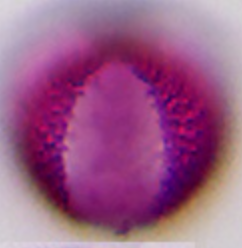

rubus_typRubus typ (braam/framboos type)

prunus_padusPrunus padus (vogelkers)
Updated after your feedback. Acer cluster removed (not lookalike).
Rejected: acer-prunus-pyrus — shapes differ under LM.
rubus_typprunus_padus
trifolium_repens
melilotus_officinalis
aesculus_hippocastanum
raphanus_typ
brassica_typ
sinapis_typ
ligustrum_vulgare
salix_typ
fraxinus_ornusbrassica_typ
anthriscus_typ
vicia_typDifferent letters (A/H/J/C) marked different. Same-letter T partners: none else in Level-2 shortlist yet.

taraxacum_typ